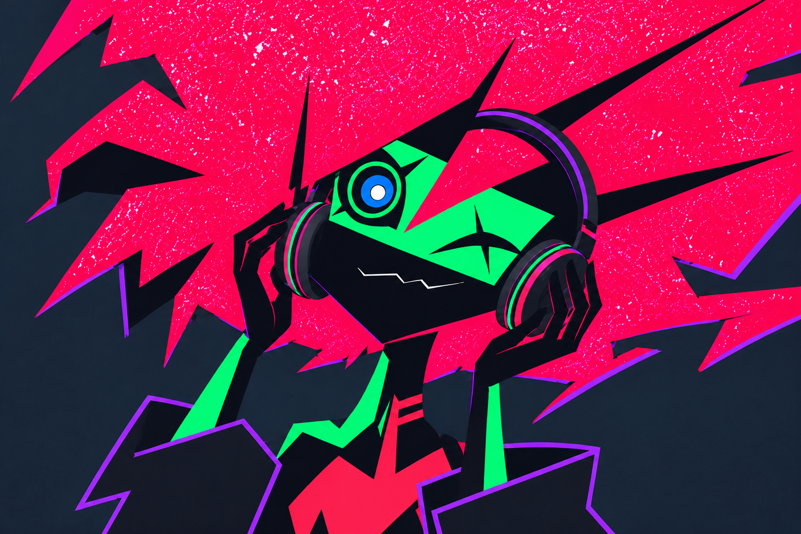
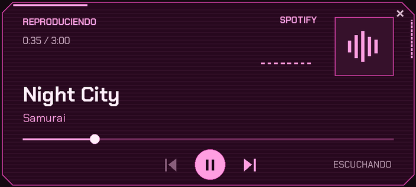

TU MÚSICA.
ELLA TAMBIÉN
LA DISFRUTA.
Capri reacciona mientras escuchas.
El reproductor tiene su propio lugar.


Panel independiente. Tú lo colocas.
Capri reacciona mientras escuchas.
El reproductor tiene su propio lugar.

